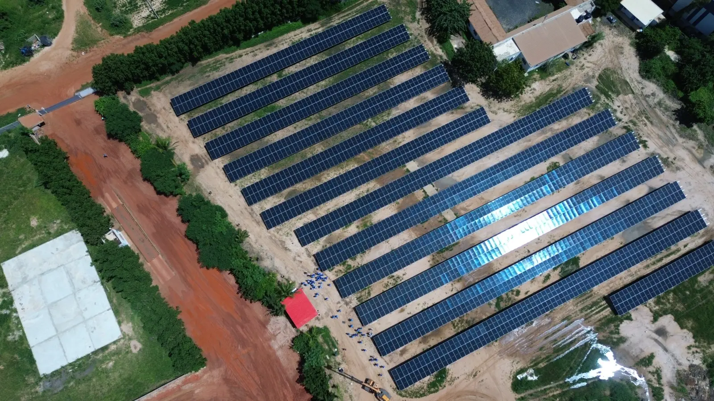
1MWc
Centrale de 1 MWc à Sandiara
Sandiara, région de Thiès · Centrale en injection directe, 7 onduleurs Sungrow de 115 kW, 100 % des besoins de l'usine couverts.
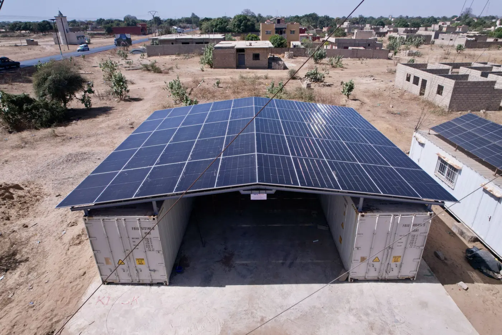
Réalisations
Lieux de culte, agro-industrie, résidences, agriculture : chaque projet est étudié, installé et suivi par nos équipes.

1MWc
Sandiara, région de Thiès · Centrale en injection directe, 7 onduleurs Sungrow de 115 kW, 100 % des besoins de l'usine couverts.

28,32kWc
ZAC de Thiès · Centrale hybride en toiture, 40 kWh de batteries, 70 % d'autonomie.
35,5kWc
Sandiara, région de Thiès · Deux conteneurs frigorifiques de 40 pieds alimentés au solaire, 60 kWh de stockage.
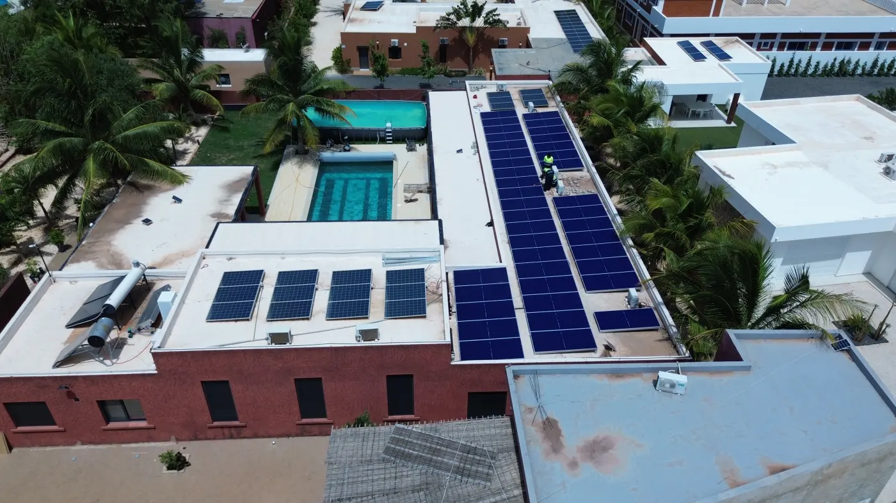
9,99kWc
Les Mamelles, Dakar · Installation résidentielle hybride, 30 kWh de batteries, 65 % d'autonomie.
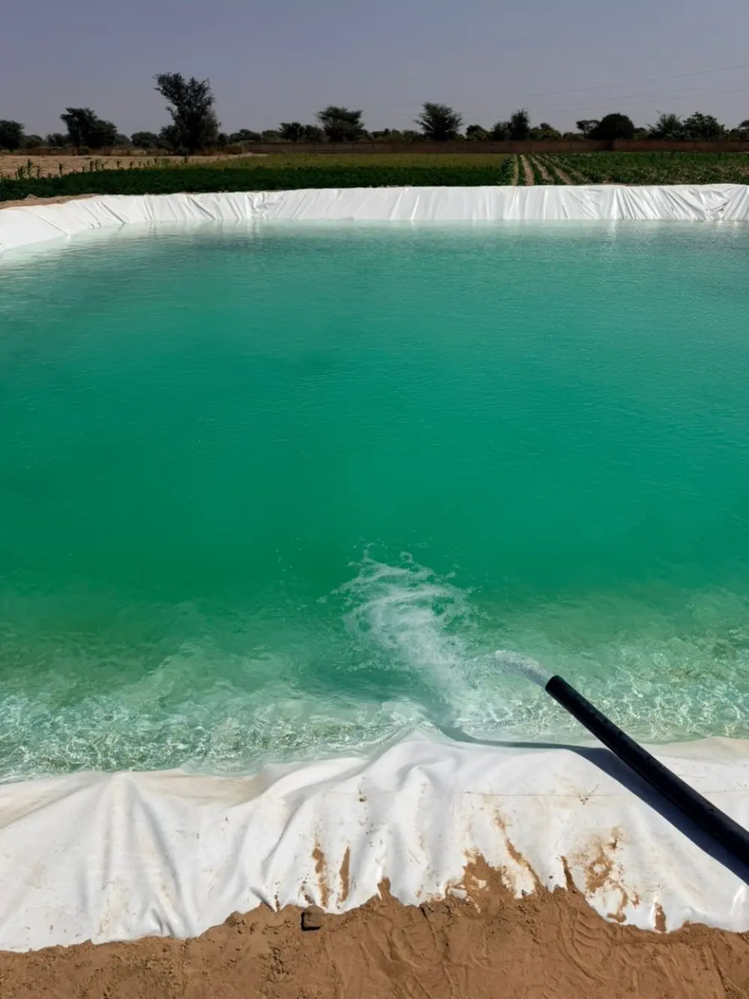
2,2kW
Keur Madaro, Thiès · Forage et pompe solaire pour le bassin d'une exploitation agricole.
Sur le terrain
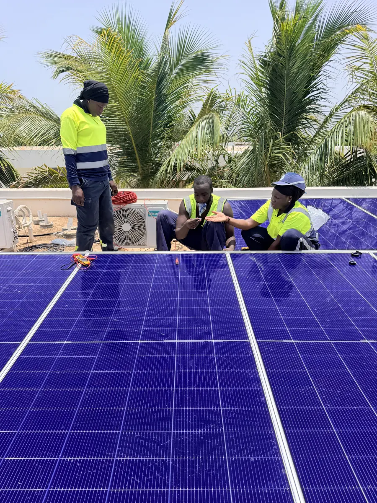
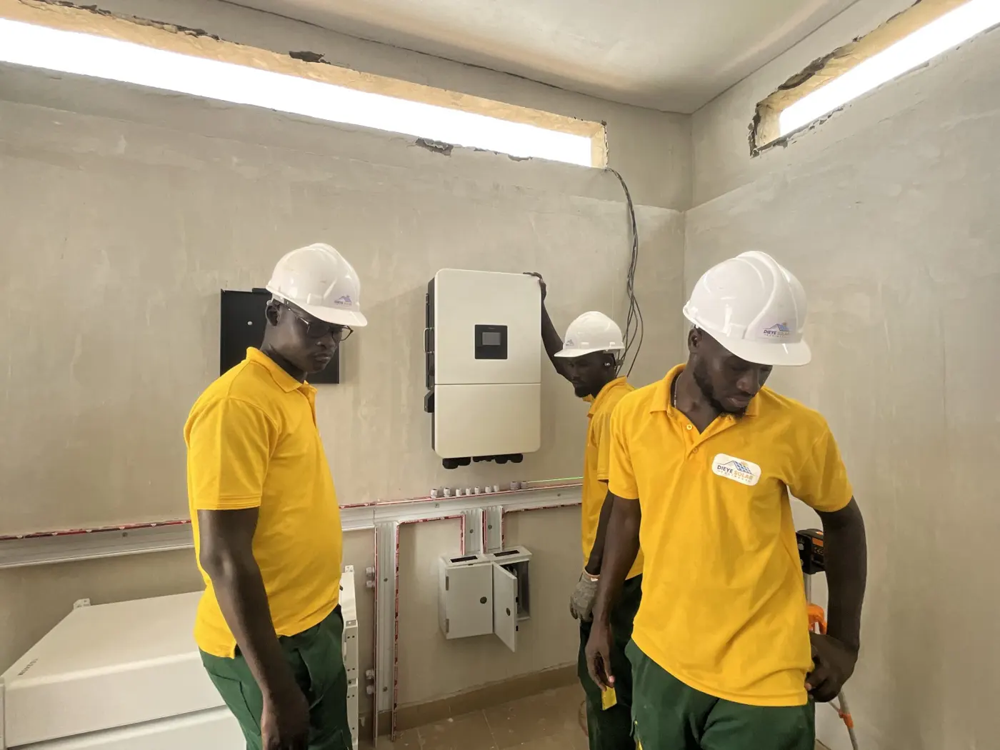
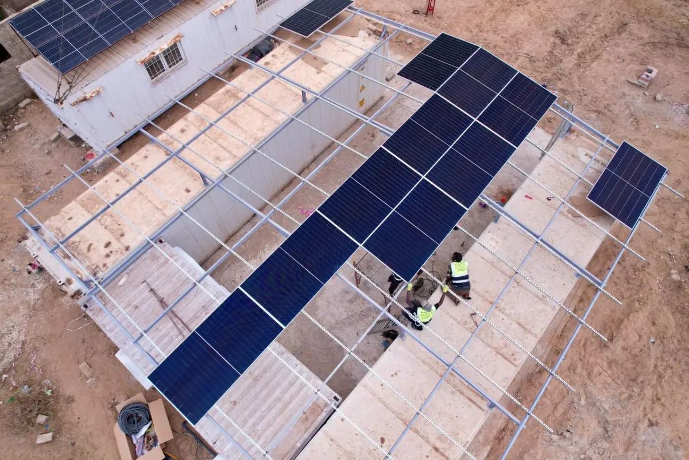
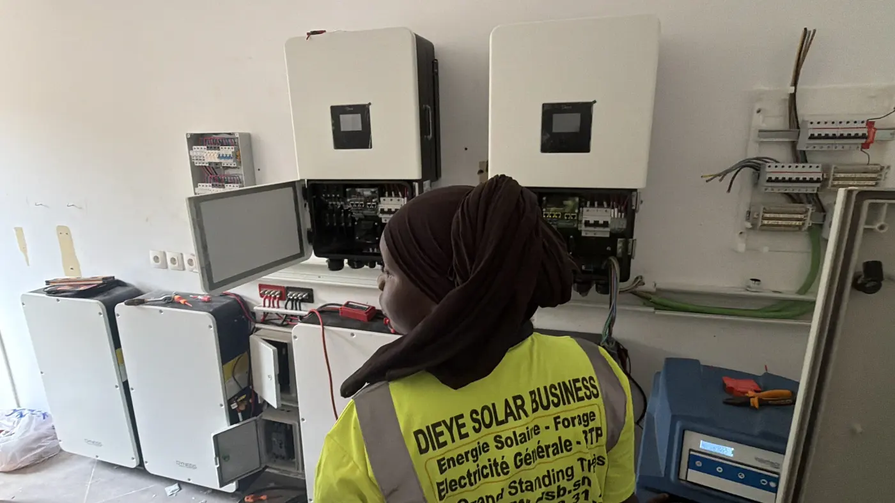
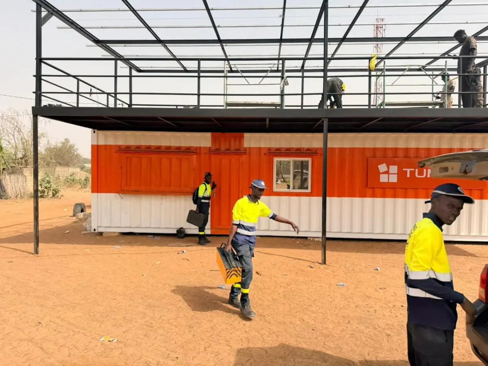
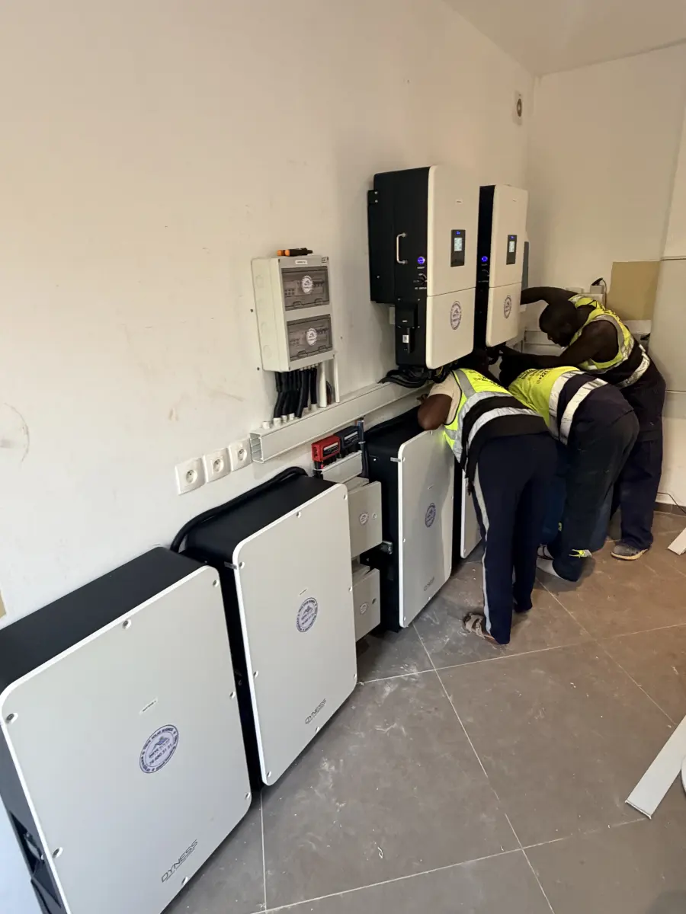
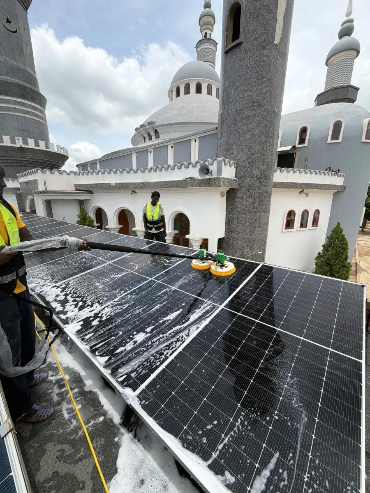
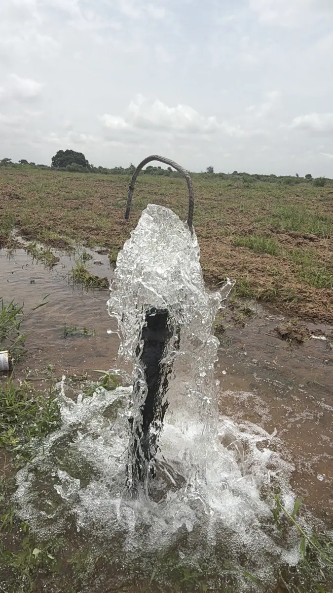
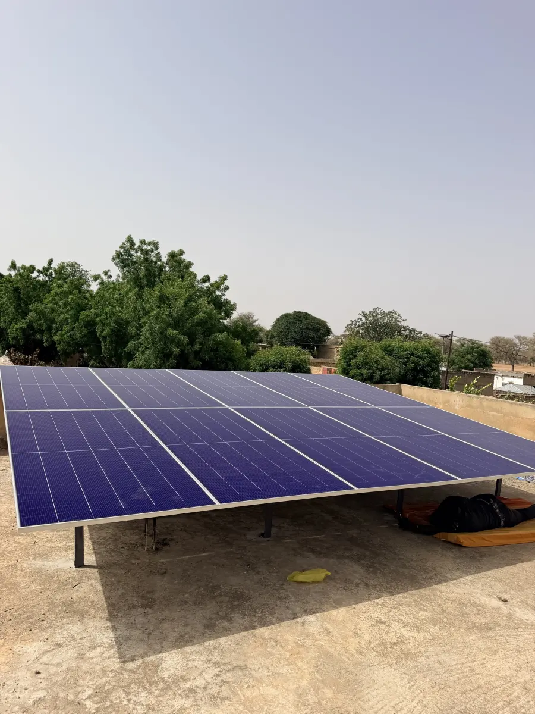
En vidéo
Parlons de votre projet
Décrivez-nous votre besoin : nous vous rappelons sous 24 heures ouvrées avec une première estimation et une proposition de visite.